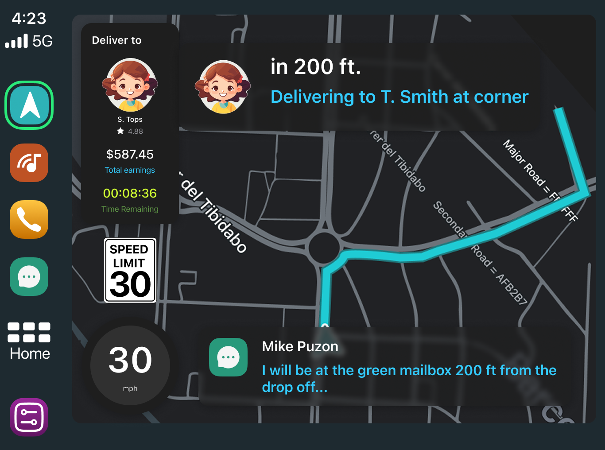
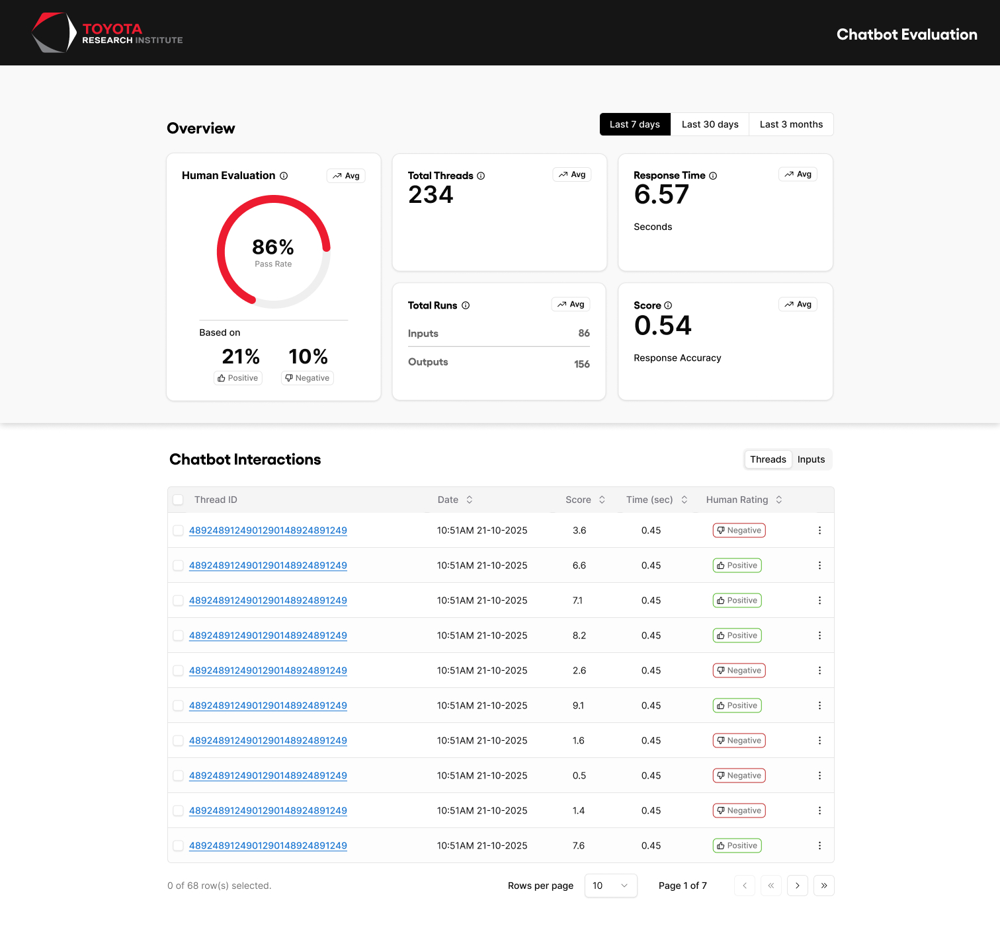
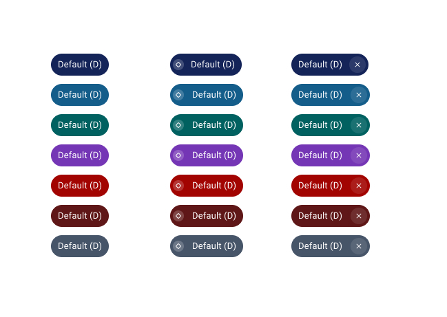
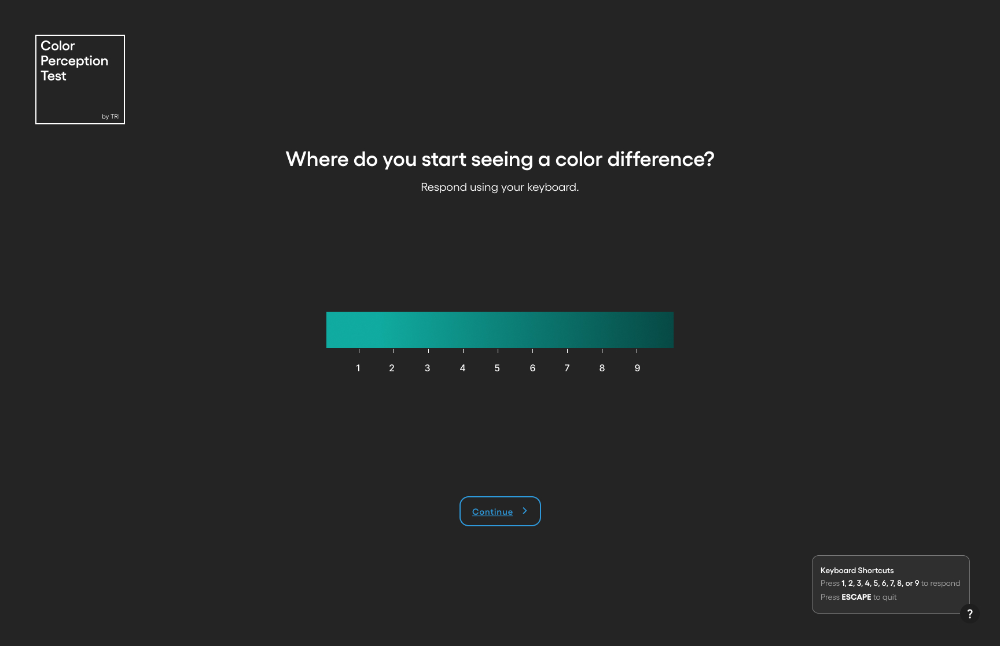
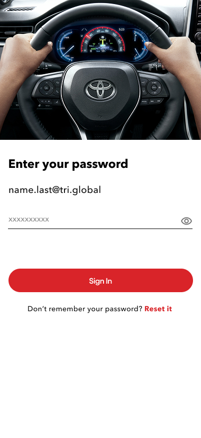

Work
Case Studies
RSE team projects at Toyota Research Institute — click any card to read the full UX case study.

Simplay
A driving simulation and feedback platform that communicates performance scores and actionable feedback in a clear, motivating experience.

TRI Website
End-to-end engagement covering UX research (stakeholder interviews, usability testing) followed by a full website redesign informed by the findings.

Ops Chatbot
An internal AI chatbot that lets users choose between three LLMs for day-to-day tasks — including an LLM evaluation dashboard and a VIA Mobile voice-enabled interface.

Whyzen
A graphical UI for E&M's AMDD team to create, save, load, and analyze graphical models using a node-based graph editor with iterative UX improvements.

LLM2CAD
A tool that bridges human creativity and precision engineering through AI-powered CAD generation, with an enhanced input form and CAD viewer experience.

Color Perception Tool
Phase I UI/UX framework for an internal color perception analysis tool supporting TRI's robotics and perception research — layout patterns, components, and interaction models.

Unstuck
Ubiquitous Just-in-Time Interventions for Creative Professionals — a browser-based app helping creative professionals overcome creative blocks.

SWARM Hackathon
An optional program for Toyota employees and customers — customized control over data sharing and unlocking real-world data for research and development.